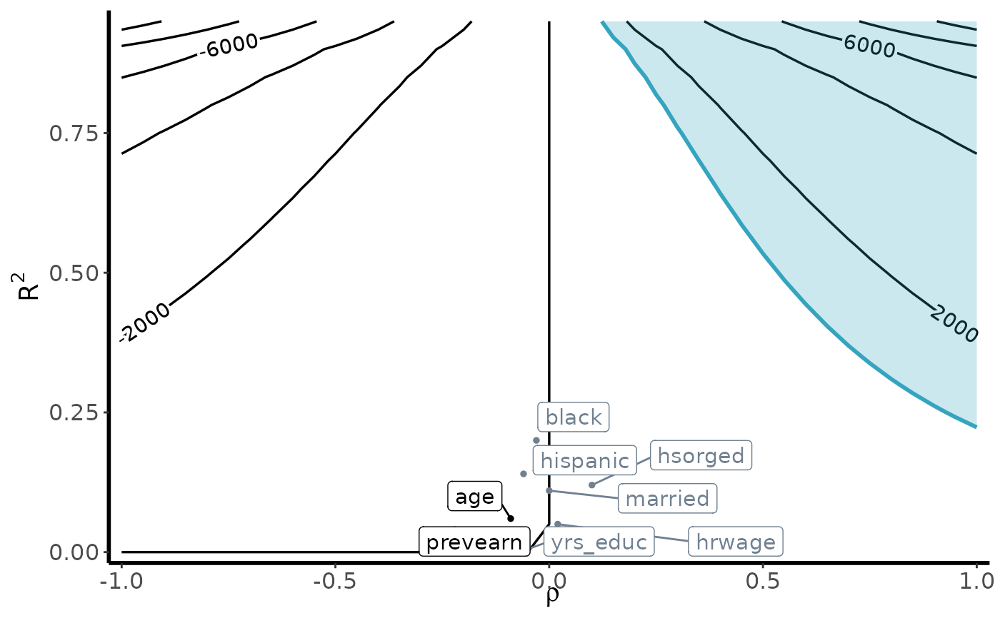

Bias Contour Plots
contour_plot.RdGenerates bias contour plots to aid with sensitivity analysis
Usage
contour_plot(
varW,
sigma2,
killer_confounder,
df_benchmark,
benchmark = TRUE,
shade = FALSE,
shade_var = NULL,
shade_fill = "#35a4bf",
shade_alpha = 0.25,
contour_width = 1,
binwidth = NULL,
label_size = 0.25,
point_size = 1,
nudge = 0.05,
axis_text_size = 12,
axis_title_size = 14,
axis_line_width = 1,
print = FALSE
)Arguments
- varW
Variance of the estimated weights
- sigma2
Estimated variance of the outcome (i.e., stats::var(Y) for obervational setting; stats::var(tau) for generalization setting)#'
- killer_confounder
Threshold for bias considered large enough to be a killer confounder. For example, if researchers are concerned about the bias large enough to reduce an estimated treatment effect to zero or change directional sign, set
killer_confounderequal to the point estimate.- df_benchmark
Data frame containing formal benchmarking results. The data.frame must contain the columns
variable(for the covariate name),R2_benchmark, andrho_benchmark.- benchmark
Flag for whether or not to display benchmarking results (
benchmark = TRUEif we want to add benchmarking results to plot,benchamrk=FALSEotherwise). If set toTRUE,df_benchmarkmust contain valid benchmarking results.- shade
Flag for whether or not a specific benchmarking covariate (or set of benchmarked covariates) should be shaded a different color (
shade = TRUEindicates that we want to highlight specific variables)- shade_var
If
shade = TRUE, this contains either a vector containing the variables we want to highlight- shade_fill
Color to fill the highlighted variables. Default is set to
"#35a4bf".- shade_alpha
Alpha value for the fill color. Default is set to
0.25.- contour_width
Width of the contour lines. Default is set to
1.- binwidth
If set to a numeric value, the function will generate a contour plot with the specified binwidth. Default is set to
NULL.- label_size
Size of the labels. Default is set to
0.25.- point_size
Size of the points. Default is set to
1.- nudge
Nudge value for the labels. Default is set to
0.05.- axis_text_size
Size of the axis text. Default is set to
12.- axis_title_size
Size of the axis title. Default is set to
14.- axis_line_width
Width of the axis lines. Default is set to
1.If set to
TRUE, the function will return a list with two elements:plotwhich contains the generated bias contour plot, anddata, which provides the data.frame for generating the contour plot. If set toFALSE, the function will simply generate the bias contour plot. Default is set toFALSE.
Examples
# For the external validity setting:
data(jtpa_women)
site_name <- "NE"
df_site <- jtpa_women[which(jtpa_women$site == site_name), ]
df_else <- jtpa_women[which(jtpa_women$site != site_name), ]
# Estimate unweighted estimator:
model_dim <- estimatr::lm_robust(Y ~ T, data = df_site)
PATE <- coef(lm(Y ~ T, data = df_else))[2]
DiM <- coef(model_dim)[2]
# Generate weights using observed covariates:
df_all <- jtpa_women
df_all$S <- ifelse(jtpa_women$site == "NE", 1, 0)
model_ps <- WeightIt::weightit(
(1 - S) ~ . - site - T - Y,
data = df_all, method = "ebal", estimand = "ATT"
)
weights <- model_ps$weights[df_all$S == 1]
# Estimate IPW model:
model_ipw <- estimatr::lm_robust(Y ~ T, data = df_site, weights = weights)
ipw <- coef(model_ipw)[2]
# Estimate bound for var(tau):
vartau <- var(df_site$Y[df_site$T == 1]) - var(df_site$Y[df_site$T == 0])
RV <- robustness_value(estimate = ipw, b_star = 0, sigma2 = vartau, weights = weights)
# Select weighting variables:
weighting_vars <- names(df_all)[which(!names(df_all) %in% c("site", "S", "Y", "T"))]
# Run benchmarking:
df_benchmark <- run_benchmarking(
weighting_vars = weighting_vars,
data = df_all[, -1],
treatment = "T", outcome = "Y", selection = "S",
estimate = ipw,
RV = RV, sigma2 = vartau,
estimand = "PATE"
)
# Generate bias contour plot:
contour_plot(
var(weights), vartau, ipw, df_benchmark,
benchmark = TRUE, shade = TRUE,
shade_var = c("age", "prevearn"),
label_size = 4
)
